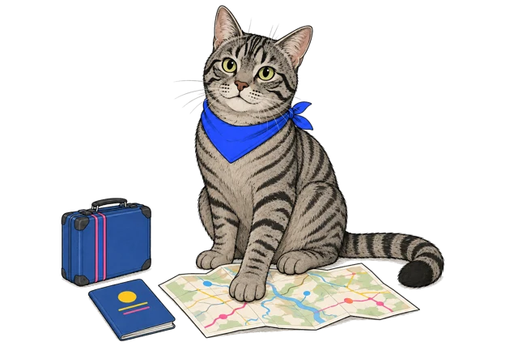

Spotlight 5 / Module 02 / A1–A1+
WORLD
COLLECTOR.
A passport. A mystery bag. A shop full of surprises.
Explore the world — and make it your own.
7 short missions1 student + 1 tutorSaved on this device

KEKS / MISSION CONTROL
“I’ve got a suitcase. You’ve got a mission.”
“I’ve got a suitcase. You’ve got a mission.”
THE COMPLETE MODULE / pages 36–44
Keep every text.
Take the conversation further.
Full textbook exercises, a larger word bank and twenty speaking situations — alongside your interactive mission route.
Your route
Choose a mission. Keep your discoveries.